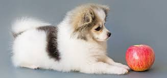
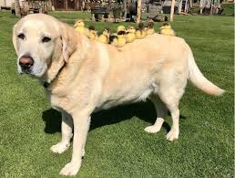
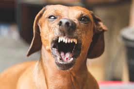
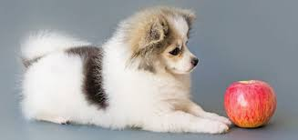
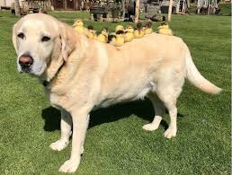
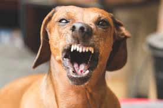
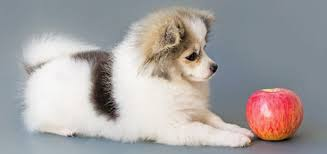
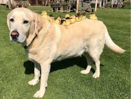
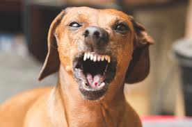

Cainele (Canis lupus familiaris) este una dintre subspeciile lupului cenușiu, fiind un mamifer carnivor din familia canidelor. Câinele este posibil să fie primul animal domesticit și cel mai folosit pentru muncă, vânătoare și companie din istoria oamenilor. Cuvântul „câine” denumește masculul speciei, iar termenul „cățea” este folosit pentru femelă.
Talie
În mod convențional, câinii sunt clasificați după talie (înălțimea de la sol până la greabăn) în următoarele categorii:
Categorii clasificare
Talie
Dimensiune(cm)
Exemple
mare
peste 65
Dog German
medie
50-65
Labrador retriever
mică
35-50
Border Collie
pitică
sub 35
Chihuahua
Galerie - Slideshow



Speranta de Viata
Speranța de viață a câinilor este între 8 și 15 ani, în funcție de rasă. Cel mai longeviv câine despre care există date a trăit 30 de ani.
 




